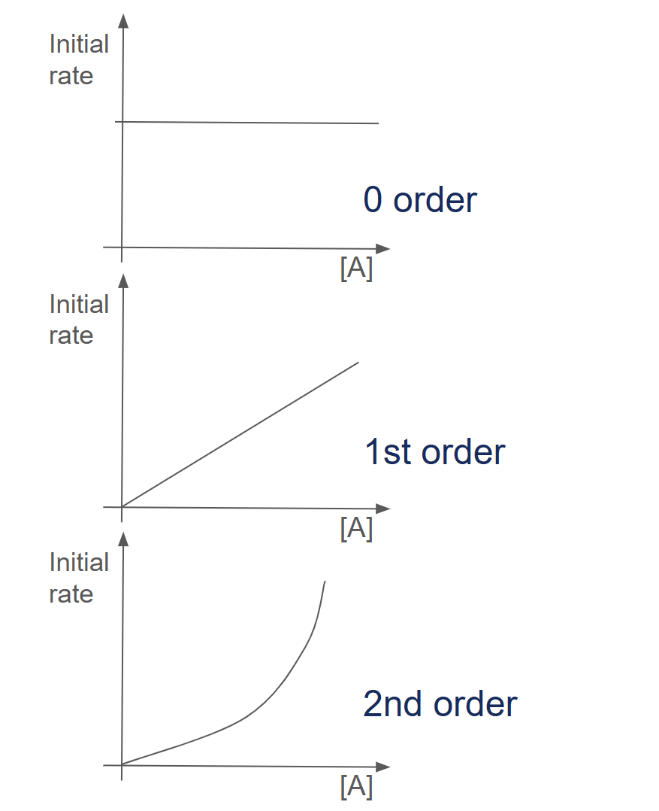

The rate equation shows how the concentration of a reactant affects the rate of a reaction. For example, the rate equation for \(2\text{H}_2(\text{g}) + 2\text{NO}(\text{g}) \rightarrow 2\text{H}_2\text{O}(\text{g}) + \text{N}_2(\text{g})\) is \(k[\text{H}_2][\text{NO}]^2\).
We can see that the reaction is 2nd order with respect to NO and first order with respect to H2. Therefore, the reaction is 3rd order overall.
The reactants in the rate equation and the order of the reactant (the power to which they are raised) can be found by conducting experiments.
Method 1: Using rate against concentration graphs
Let's say that we are trying to find the order of A in the reaction A + B → C. We will carry out many different experiments with different concentrations of A and an excess of B. We then plot a graph of the initial rate of reaction against concentration of A.
For a zero-order reaction, the plot of reaction rate against concentration is a horizontal straight line. The reaction rate does not change with concentration.
For a first-order reaction, the plot is an inclined straight line going through the origin. The rate is directly proportional to the concentration.
For a second-order reaction, the plot is an upwardly curved line. The reaction rate is directly proportional to the square of the concentration.

Method 2: Using concentration-time graphs
Let's say that we are trying to find the order of A in the reaction A + B → C. We will carry out only one experiment with a known concentration of A and an excess of B. We use a device to measure to concentration of A as the reaction proceeds. Then, we plot a graph of the concentration of A against time.
For a zero-order reaction, the graph is a descending straight line.
For first and second-order reactions, the graph is a curve, with the second-order reaction curve being deeper and having a relatively longer tail.
We can use the graphs for first and second-order reactions to determine the half life (the time taken for the conc of A to drop to half of its initial value).
If the half life is constant, the reaction is first order. We can then calculate the rate constant, k using the equation \( k = \frac{0.0693}{\text{half-life}}\)
If the half life keeps doubling, the reaction is second order.